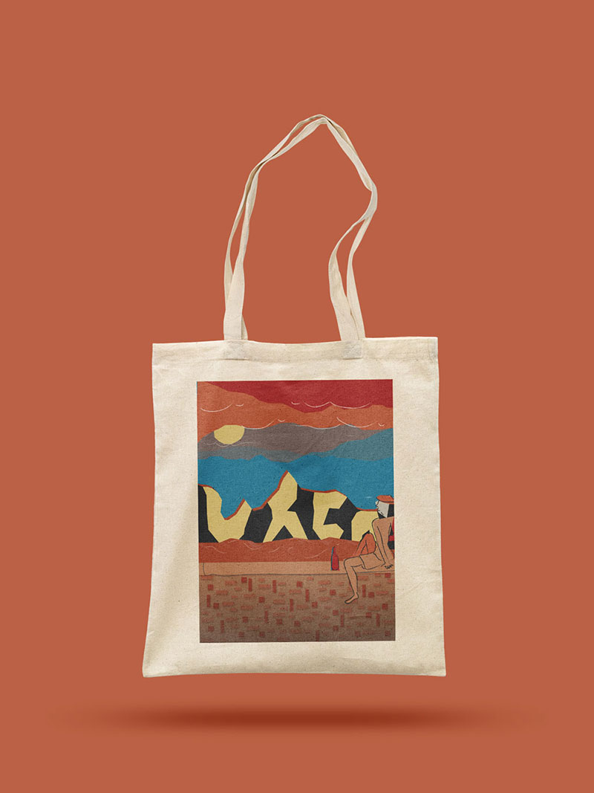
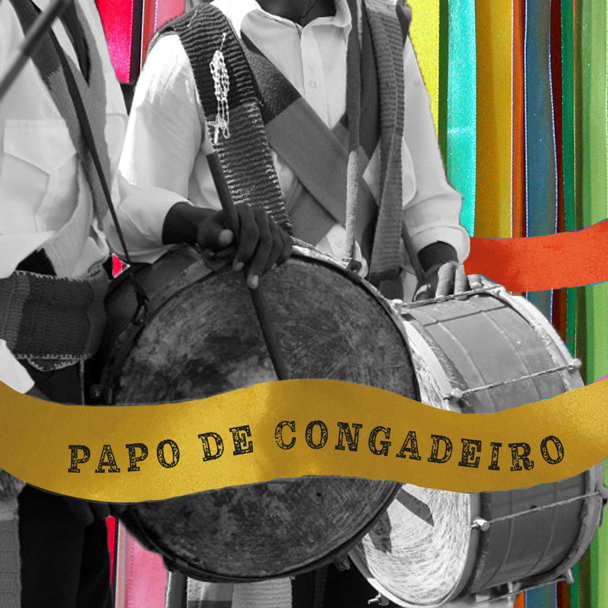

Milena Barcessat Frydman
____________________________________________________________________________________
Portfólio

Dinâmica interativa de Diálogo com a Diversidade através da arte

Arte na Urca
Desenvolvimento de Ilustração e aplicação em Ecobag
Desenvolvimento de Ilustração e aplicação em Ecobag


Desenvolvimento de Identidade Visual para uma marca fictícia

Colagem feita para levantar uma questão sobre o Corpo Humano

Papo de Congadeiro
Podcast desenvolvido para valorizar os costumes e tradições da festa do Congado
Podcast desenvolvido para valorizar os costumes e tradições da festa do Congado